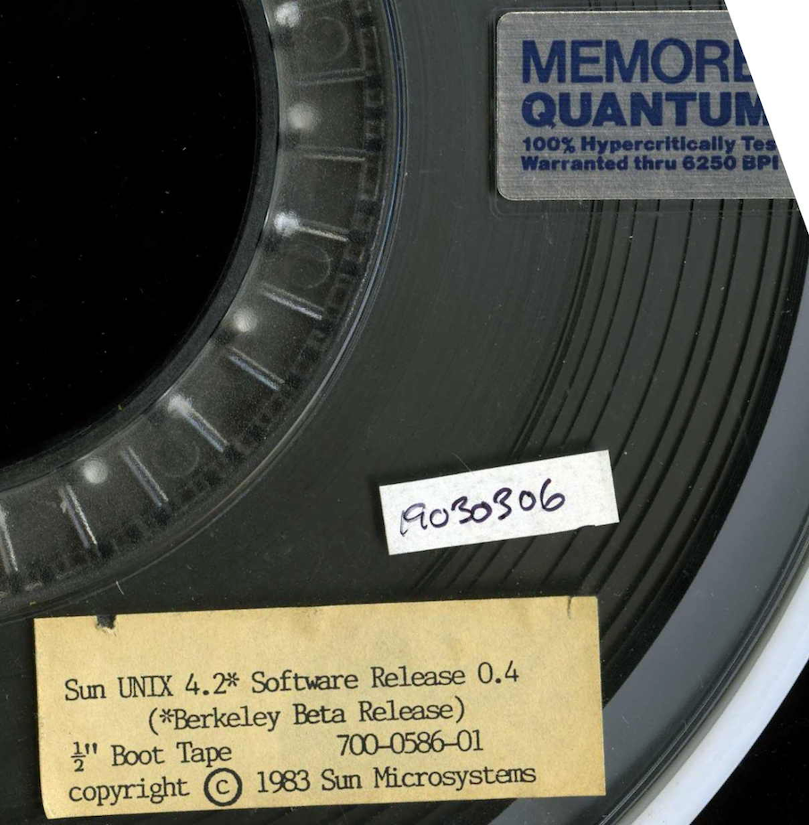
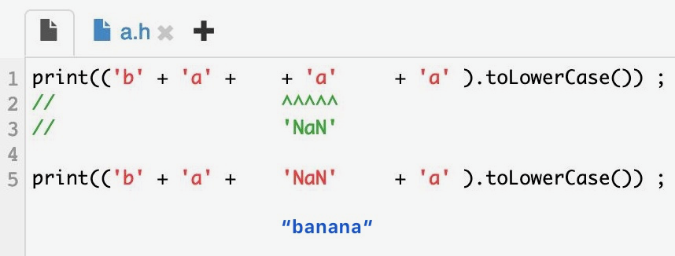

2019-08-15
https://gcc.gnu.org/gcc-9/changes.html
https://www.reddit.com/r/cpp/comments/cpiwfc/gcc_92_released/
C++ is growing. Change can be daunting, but I think we’re going to be fine. And when one day a specific little hammer is just the right tool for the task at hand, I’ll be thankful that someone added that hammer to my toolbox.
https://www.reddit.com/r/cpp/comments/cpqzwk/remember_the_vasa_or_plus_%C3%A7a_change_plus_cest_la/
https://www.windriver.com/products/vxworks/
https://resources.windriver.com/vxworks/vxworks-compilers-and-frameworks
VxWorks powers more than 2 billion devices.
The goal of this blog post is to convince you that we need an equivalent of Rust Editions in C++, and that it is possible and a good idea.
https://www.reddit.com/r/cpp/comments/clcz08/fixing_c_with_epochs/
https://www.reddit.com/r/cpp/comments/cnsi6x/an_alternative_to_epochs/
https://www.reddit.com/r/cpp/comments/cliw5j/should_not_exceptions_be_finally_deprecated/
I have been programming in C++ for a long time, but I still do not understand how to use exceptions.
https://www.reddit.com/r/cpp/comments/cl7arc/a_c_acronym_glossary/
See also: https://en.cppreference.com/w/cpp/language/acronyms
Seemingly erroneous (appearing Constrained by conflicting generic parameters), but Actually works with the Right implementation (unconstrained bY the conflict due to minimized dependencies). From http://www.stroustrup.com/SCARY.pdf
C++ Parallel Programming with Threading Building Blocks
https://www.reddit.com/r/cpp/comments/cov2xw/pro_tbb_c_parallel_programming_with_threading/
Sean Parent: https://stlab.cc/tips/stop-using-out-arguments.html

